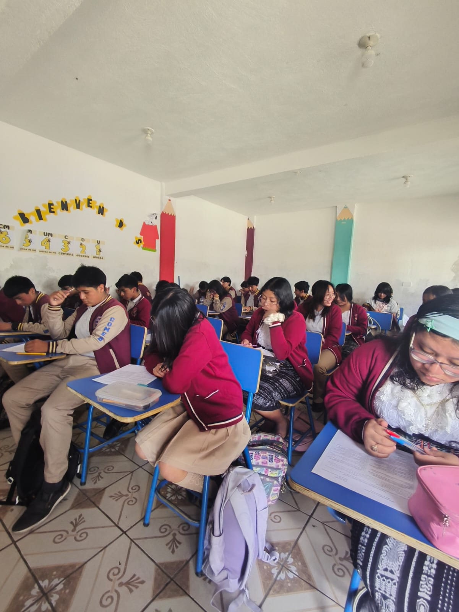
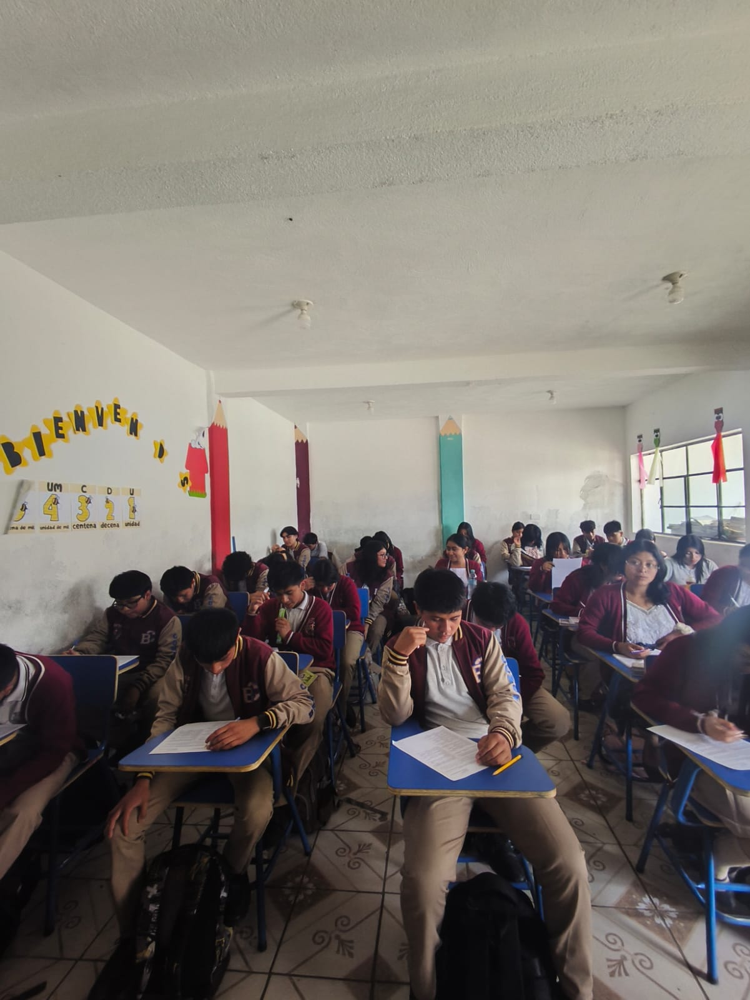
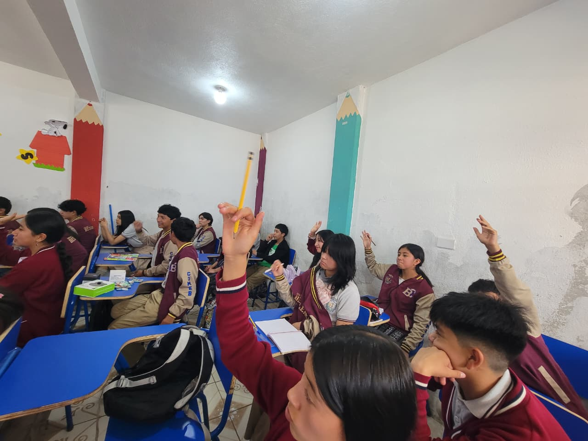

PRESENTACIÓN DE GRUPO
Integrantes
- Isaías Tubac Chuy
- Luis Carlos Ávila Simaj
- Josselin Magalí Coy Simón
- Eymi Karina Roquel Tecun
- Lesly Aracely Martínez Reyes
- Nancy Flor de María Perén Morales
- Jhanneth Sindy Vannessa Bal Saquiquel
- Hugo Adolfo Sajcabún Icú
Proyecto de Investigación
Salud física, mental y emocional de los estudiantes de segundo básico del Colegio Bethlehem.
Planteamiento del Problema
En la actualidad, la salud física, mental y emocional de los adolescentes es vital por su influencia en el rendimiento académico y el desarrollo integral. Diversos factores como el estrés académico, uso excesivo de dispositivos electrónicos y problemas familiares generan alteraciones en la salud de los estudiantes. Estas situaciones se manifiestan mediante ansiedad, cansancio físico y baja autoestima. En Guatemala, la salud se ve comprometida por una brecha de atención del 97% en salud mental. Específicamente en el Colegio Bethlehem, en San Juan Comalapa, no se cuenta con información específica sobre el estado de salud de los estudiantes de segundo básico, lo cual restringe el entendimiento de sus necesidades.
Preguntas de Investigación
- ¿Cuál es el estado actual de la salud física, mental y emocional de los estudiantes de segundo básico del Colegio Bethlehem?.
- ¿Cómo son los hábitos relacionados con la salud física de los estudiantes?.
- ¿Qué percepción poseen sobre la importancia de la salud integral?.
- ¿Cuáles son los factores que afectan el bienestar físico, mental y emocional?.
Justificación
La etapa de educación básica coincide con la adolescencia, donde los jóvenes son altamente vulnerables a presiones académicas y del entorno digital. Los entornos educativos suelen centrarse en habilidades cognitivas, postergando la gestión del bienestar emocional. Con un 59% de suicidios en población joven en Guatemala y trastornos mentales afectando a 1 de cada 7 adolescentes, la escuela debe implementar estrategias de apoyo emocional. Este estudio aporta datos para fundamentar estrategias prácticas de resolución de conflictos y autoestima.
Delimitación
- Ámbito Geográfico: Municipio de San Juan Comalapa, departamento de Chimaltenango, Guatemala.
- Ámbito Institucional: Colegio Mixto Evangélico "Bethlehem".
- Ámbito Personal: Adolescentes de Segundo Básico entre 12 y 14 años.
- Ámbito Temporal: Primer semestre del año 2026 (meses de mayo y junio).
Objetivos de la Investigación
Objetivo General: Analizar el estado actual de la salud física, mental y emocional de los estudiantes de segundo básico del Colegio Bethlehem.
Objetivos Específicos:
- Describir los hábitos relacionados con la salud integral.
- Determinar la percepción de los estudiantes sobre la importancia de la salud.
- Identificar los factores físicos, mentales y emocionales que afectan su bienestar.
Enfoque de la Investigación
La investigación posee un enfoque cuantitativo, ya que recopila y analiza datos medibles sobre la salud de los estudiantes. Su alcance es descriptivo, con el fin de caracterizar y reportar de manera objetiva la situación actual. El diseño utilizado es no experimental y transversal, observando los fenómenos en su entorno natural en un único momento del tiempo.
Población y Muestra
La población de estudio está conformada por la totalidad de los 33 estudiantes de segundo básico del Colegio Bethlehem. Debido al tamaño accesible, se optó por un muestreo censal, donde la muestra equivale al 100% de la población.
Técnicas e Instrumentos de Recolección
Se utiliza la encuesta como técnica principal para captar percepciones y experiencias. El instrumento es un cuestionario estructurado con preguntas cerradas con escala de valoración, dividido en tres bloques temáticos. El primer bloque abordará la salud física (sueño, pantallas, alimentación); el segundo, la salud mental (estrés, concentración, aislamiento); y el tercero, la salud emocional (autorregulación, conflictos, redes sociales).



Presentación de Resultados
Los resultados se obtuvieron encuestando a 33 estudiantes de segundo básico durante el ciclo 2026. A continuación, se presentan los datos graficados de los hallazgos más relevantes.
Sección 1: Hábitos de Salud Física
1. Horas de Sueño Suficientes
3. Actividad Física Semanal
Sección 2: Percepción de Salud Integral
2. Emociones y Rendimiento
4. Actividades contra Ansiedad
Sección 3: Factores que Afectan el Bienestar
3. Problemas Familiares
5. Impacto de Burlas y Críticas
Conclusiones
- Se determinó que la salud física, mental y emocional influyen directamente en el rendimiento académico y bienestar integral de los estudiantes.
- La mayoría de los estudiantes reconoce que mantener una buena salud favorece la prevención de enfermedades y un mejor desempeño escolar.
- A nivel físico, mantienen prácticas positivas como higiene y alimentación, pero no siempre duermen lo suficiente, afectando su energía.
- Factores externos como la acumulación de tareas, problemas familiares y críticas de compañeros afectan negativamente su bienestar emocional y mental.
Recomendaciones
- A las Autoridades: Implementar talleres mensuales de educación socioemocional para fortalecer la autoestima, resolución de conflictos y manejo del estrés, contrarrestando el impacto de las críticas reportadas por el 40% de estudiantes.
- Al Personal Docente: Capacitar en la identificación temprana de señales de alerta (ansiedad o aislamiento) para facilitar la comunicación antes de que el rendimiento se vea afectado.
- Ámbito Físico: Fomentar actividades recreativas y reducir conductas sedentarias para disminuir el cansancio físico.
- Futuras Investigaciones: Formalizar la aplicación anual de este diagnóstico para medir la efectividad de las acciones institucionales y la evolución del bienestar.